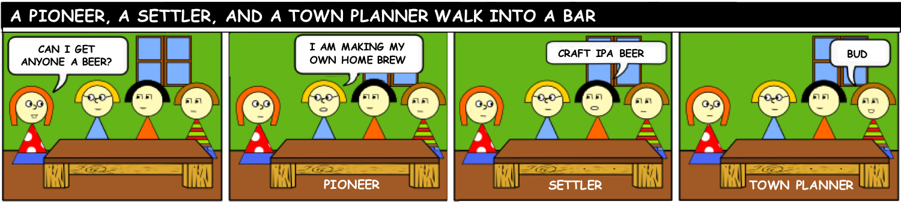

Digital Transformation Journey

Software is “still” eating the world

“소프트웨어가 세상을 먹어치우고 있다…여전히!”
“Software is eating the world” 는 Marc Andreessen이 아주 오래전에 Wall Street Journal에 올렸던 기고입니다. 그 이후 세상은 호텔을 하나도 소유하지 않은 에어비엔비가 숙박업을, 영화관을 하나도 소유하지 않은 넷플릭스가 미디어 산업을, 오프라인 상점을 하나도 소유하지 않았던(지금은 있지만) 아마존이 리테일 산업을 장악하는 세상으로 바뀌어 버렸습니다.
중요한 것은 “아직도” 먹어치우고 있다는 것입니다.
사실 몇 년 전만 해도 인터넷 서비스, 미디어, 통신, 리테일 외의 전통 산업에서 Digital Disruption은 올 듯 올 듯 하면서 동인이 잘 생기지 않았습니다. 잘 되는 기존 산업을 카니발라이즈하면서 Disruptive한 비즈니스를 굳이 만들 필요가 없을 테니까요. 즉, 모든 산업 도메인이 크리스텐슨 교수의 “파괴적 혁신” 범주에 들어갈 동인이 없었습니다.
그러나 우리는 Nvidia의 사례에서 무엇인가 힌트를 얻을 수 있습니다. GPU를 만드는 하드웨어 제조업체가 딥러닝 SDK와 같은 소프트웨어를 만들기 시작한 것입니다. 이는 기존 산업을 Disruption하는 것이 아니라 오히려 기존 산업을 더 활성화할 수 있는 것이지요. 반면에 Nvidia의 GPU Cloud 서비스는 기존 비즈니스의 파괴가 될 수 있습니다. 이는 그래픽 카드를 판매하는 Division에서 그리 달갑지는 않을 것입니다.
경쟁의 압박과 Commodity화
기술의 발전 속도가 빨라짐에 따라 경쟁의 압박은 더욱 심해집니다. 줄다리기 중 한 쪽이 사람이고 한 쪽이 소프트웨어/AI라면 어느 한 쪽은 더 이상 경쟁력을 잃게 됩니다. 이제는 사람의 힘을 넘어서 소프트웨어 기반, AI 기반으로 경쟁하는 구조로 이미 많이 변화하고 있습니다.

누구는 맥주를 나만의 차별화된 것이 필요하다고 생각하고 누구는 그저 생필품이라고 생각한다.(BUD 비하는 아님)
Source: https://cloudrumblings.io/a-pioneer-a-settler-and-a-town-planner-walk-into-a-bar-9889d7c8a19e#.jrt2rzvsk [DREW FIRMENT]
이는 소프트웨어 중심으로 기술 Disruption이 일어나고 있고 이 영역에 핵심 역량이 집중되며, 기존의 인프라 자산은 급격히 Commodity화되고 있다는 것을 의미합니다. 아래 쪽 인프라가 생필품화되지 않으면 그 위에 영역에서 혁신을 가져가기 힘든 이유이기 때문이지요. 마치 매슬로우의 욕구단계설이 생각나기도 합니다. 기본의 위생/안전 욕구가 충족되지 않으면 궁극적인 자아실현 욕구에 도달할 수 없는 것이 그것입니다. Wardly의 Value Chain Mapping에서도 알 수 있듯이 무엇을 Commodity(Utility)로 보고, 무엇을 빌리며 어디에 집중할까라는 전략맵은 점점 더 중요해지고 있습니다.
비즈니스의 변화
한 때 AI Singularity에 관한 미래학자 커즈와일의 관련 글을 보고 공포심이 생겼을 때가 있었습니다. 물론 수십년 후에는 AI가 인간의 두뇌 능력을 상상할 수도 없이 초월해 세상을 지배하게 될 지도 모르지만, 여기서는 현재와 3~5년 정도의 Tipping Point를 생각해서 이미 발생하고 있는 산업 내의 현상에 집중하고자 합니다.
Netflix에서 판매되는 VoD의 80% 이상이 Recommendation 엔진이 추천해준 컨텐츠라고 합니다. Netflix의 개발자들은 개인 성향을 분석할 수 있는 정보를 수집하는 프로그램과 이를 중앙의 인텔리전스에 전송하는 프로그램, 그리고 그 결과를 다시 사용자에게 전송하는 프로그램에 집중하고 있을 것입니다. 상상이지만 이전에는 VoD 판매 현황 통계를 보여주는 프로그램, 그것을 사람이 관리할 수 있도록 도와주는 프로그램을 만들고 있었을 것입니다.

주사위는 (기계에 의해) 던져졌다.
제조나 기타 산업도 마찬가지입니다. 제조의 불량률 관리나, 물류의 최적화 등에서도 기존의 IT시스템의 라이프사이클은 변화될 것입니다. 기존의 IT는 Control로서의 IT, 즉 “정보수집-사람이 판단할 수 있는 정보제공-사람이 판단-시스템에 적용”하는 라이프사이클입니다.그러나 Enabler로서의 IT는 라이프사이클은 아래와 같을 것입니다.
“정보를 한 곳에 모음 - 인텔리전스가 학습 - 추론을 서비스 형태로 사용”
아키텍처의 변화
애플리케이션 아키텍처의 변화
관련하여 EDA(Event Driven Architecture)가 각광받고 있습니다. 성공적인 비즈니스 성과가 나오게 하기 위해 각 이벤트(System, Customer, IoT, AI)를 모두 비즈니스 기회라고 생각하고 이것을 실시간으로 의사결정 내릴 수 있는 이벤트 기반 아키텍처입니다. 다만 이벤트 기반이라 해서 모두 동일한 패턴은 아닐 수 있고 좀 더 엄밀히 구분하여 목적에 맞는 아키텍처를 선택해야 할 것입니다. 마틴 파울러 - What do you mean by “Event-Driven”?
“난 그저 매달려 기다리고 있을테니, 내가 넓게 펴질 수록 바람이 세게 분다고 생각해.”
그것과 다른 아키텍처는 요청(Request) 기반 아키텍처입니다. 요청 기반 아키텍처에서는 데이터가 중심에 있고 데이터에 대한 접근을 REST등의 접근 경로를 통해 접근하는 것이 기본 골격입니다.
AI 스피커로부터 받는 음성, IoT 장비의 실시간 이벤트, 보안 이벤트, 공장의 실시간 운영 데이터, 항공 트래픽 제어 이벤트 등 이벤트 기반 비즈니스들은 요청 기반 아키텍처보다는 메시지 큐 기반의 Pub/Sub 아키텍처가 적합합니다.
이벤트를 처리하는 방법은 전형적인 Pub/sub 미들웨어(Kafka, RabbitMQ등의 큐)로 처리하거나 서버리스의 FaaS(Function as a Service), Bus 등 다양한 방법이 있을 수 있고, 데이터의 스트리밍 분석 처리를 위한 Spark와 같은 형태도 이벤트의 처리 방식 중 하나가 될 수 있습니다.
하지만 모든 애플리케이션이 EDA가 되어야 하는 것은 아닙니다. 이벤트의 끝자락에는 결국 요청 기반 애플리케이션이 존재할 수 있고, 또한 이벤트와 무관한 presisitent한 시스템은 요청 기반 아키텍처로 존재하는 것이 합리적일 것입니다.
MASA(Mesh App and Service Architecture)이라고 하는 용어는, 수 많은 앱과 서비스가 상호 간에 연결된 환경을 표현하기 적절한 용어입니다. 마이크로서비스(microservice) 아키텍처로 구성된 작은 단위의 앱들이 구동되는 시스템을 서비스 매쉬 레이어에서 오케스트레이션 하는 구조입니다.
다만 모든 것이 마이크로서비스화되는 것은 아니고, 서비스 목적에 맞는 granularity에 따라,
- Macroservice
- Miniservice
- Microservice
- Nanoservice
등으로 분화될 것입니다.
피라미드를 모래로 짓는 것은 어리석을 수 있고, 해변가를 큰 돌로 채울 수는 없다.
각 앱들은 PolyGlot(다양한 프로그래밍 언어와 기술 스택)으로 구현될 수 있습니다. Java/Spring Boot, Python/Tensorflow, nodejs, C# 등 비즈니스 애플리케이션, 데이터 분석, 웹 애플리케이션, 게임 등 각 워크로드 성격에 맞는 기술 스택 구조를 선택하고 이를 외적인 아키텍처(outer architecture)가 오케스트레이션하는 방식이 적절합니다. Istio와 같이 애플리케이션 내에 영향을 주지 않고 Sidecar 방식으로 작동하는 기제가 적합한 구조가 될 것입니다.
인프라스트럭처의 변화
이제 애플리케이션은 준비 되었습니다. 남는 것은 배포에 대한 의사결정입니다. 서비스를 즉시 개선하면 얻을 수 있는 효과는 인텔리전스가 판단할 수 있고, 이를 1000대의 서버에 즉시 배포했을 때 장애에 대한 Risk와 비교하여 이를 실행할 지 의사결정이 남게 됩니다.
인텔리전스에서의 학습과 성장의 속도는 빠를 것입니다. 기존의 IT 교체 사이클 주기로는 이것을 따라가기 어려울 수 있습니다. 최적화에 필요한 소프트웨어를 적시적소에 제공하기 위해서는 유연한 인프라와 언제든 버릴 수 있고(disposable) 변경 가능한 애플리케이션 형태로 진화되어야 합니다. 또한 인프라도 수동으로 구성하는 대신 스크립트 등을 사용하여 마치 소프트웨어를 프로그래밍하는 것처럼 처리해야 합니다.(Infrastructure as Code). Infrastructure as Code는 DevOps의 Key가 되는 속성 중 하나입니다.
이렇게 되면 애플리케이션의 수정과 인프라스트럭쳐의 작업 사이의 경계가 모호해지고, 애플리케이션 개선 주기는 빨라지게 됩니다. 조작 가능한(Composable) Infrastructure가 필요한 것이고, 이에 가장 보편적인 기술은 Docker입니다. 애플리케이션과 인프라를 컨테이너화해서 마치 인프라를 Software처럼 다루게 됩니다.

컨테이너 오케스트레이터계를 평정한 Kubernetes
Docker의 Orchestrator로서 Docker Swarm, Rancher, Kubernetes 등 여러 오픈소스들이 각축적을 벌이다가 작년 하반기부로 Kubernetes로 Consolidation된 것은 자명한 사실입니다. 2017년 말에 CNCF는 Certified Kuberenetes Product들을 발표하였고 여기에는 Cloud Foundry와 같이 마치 Kuberenetes의 경쟁으로 보였던 플랫폼들도 놀랍게도 그곳에 라인업되어 있었습니다. Cloud Foundry는 원래 있던 PaaS 기능을 CFAR(CF Application Runtime)으로 재그룹핑하였고 Kuberenetes를 포함시키는 별도 라인업을 CFCR(Cloud Foundry Container Runtime)으로 명명하였습니다.
People의 변화: 시민개발자의 부상
인프라스트럭처가 Code화 되고, 주요 비즈니스 판단은 인텔리전스가 처리하게 된다면 많은 LoB(Line of Business) 인원들은 기존의 수작업 대신 자신이 할 일을 개발(develop)하게 될 것입니다. 물론 Control Plane에 가까워질 수록 기존의 전문 개발자들이 필요하겠지만, Business Plain에 가까워질 수록 Low-code 개발자(Function, 스크립트 개발자)와 No-Code 개발자(매크로, BPM, RPA, DL모델러 등)가 많아질 것입니다.
시민 개발자(Citizen Developer)가 많아질 수록, 기존에 고개를 숙였던 4GL이나 GUI 개발도구, 모델러 등이 다시 필요하게 됩니다. High-Control 플랫폼은 Control Plain에서, High-Productivity 플랫폼은 Business Plain에서 요구될 것입니다.
기존의 Analyst들은 Data Scientist로, 기존의 Process Manager는 BPM/RPA(Robotics Process Automation) Developer로 바뀌어야 할 수 있습니다. 기존의 정보시스템과 IT전담조직을 매개체로 시스템과 의사소통하던 LoB들이 Business Enabler로서 역할을 가져가야 할 경우에는, 이제는 더 이상 정보시스템이 아닌 직접 시스템과 소통을 해야 할 필요가 있기 때문입니다.
누구에게는 전문가용 펜이 필요하고 누구에게는 연필이, 누구에게는 크레파스가 필요하다.
시스템의 변화: 다양성
개발자의 유형도 다양하듯이 시스템 측면에서도 모든 워크로드들과 비즈니스들이 동일한 패턴으로, 동일한 공간에서 동작하지는 않을 것입니다. 보안, 성능, 비즈니스 제약사항, 지역성, 서비스 레벨, 비용과 같은 Constraint와 이벤트 기반, 대용량 배치 처리, 스트리밍 등 워크로드의 성격에 따라 각 시스템들은 그 시스템이 있어야 할 최적의 위치와 형태에서 동작해야만 합니다. 예를 들면 배포 모델(Private/Public), 호스트 방식(Host, VM, Container, Function), 구현 스택, 아키텍처(EDA vs MSA) 등에 따라 많은 종류의 워크로드들이 많은 공간에 존재할 것입니다.
물론 논리적으로는 가상화와 API통합을 통해 추상화하는 것이 필요합니다. 단, 각 개별 시스템의 구조는 시스템에 맞게 최적화하는 것이 바람직합니다. 이를 HAP(Hybrid Application Platform)이라고 부를 수 있는데(특정 제품은 아닙니다),
- 구성원: 전문개발자, 시민개발자, UX, 4GL 개발자, 데이터 사이언티스트 등
- 레이어: System of Record, System of Differenciation, System of Innovation
- 애플리케이션 유형: 모바일, 데이터 중심, IoT, 트랜잭션 기반, AI 기반
- 배포 모델: 온프리미스, 클라우드, 하이브리드, 임베디드 등
을 고려한 엔터프라이즈 아키텍처를 고려해야 할 것입니다.
여정의 수립과 Small start
모든 것이 첫 술에 배부를 수는 없듯이 전체 시스템을 Transformation하는 데는 장기적인 로드맵이 필요합니다. 또한 Journey Map을 세워 각 시스템에 특성에 맞게 여정표를 준비해야 할 것입니다. 시스템별로 아래 예시의 질문들을 거쳐 자신이 도달할 곳으로 가게 되는데 언제 도달할지는 비즈니스 상황을 고려하여 얻을 것(Gain)과 소요되는 비용(Pain)을 따져 보아야 할 것입니다.
- 애플리케이션이 Stateful한가, Stateless한가?
- 애플리케이션을 완전히 리아키텍처링할 의지가 있는가?
- 이벤트 드리븐인가?
- 퍼블릭 클라우드를 사용하기에 문제가 없는가?
- 컨테이너의 제어권을 어느 정도 가져오고 싶은가?
등 핵심 질문(Key Question)과 여정의 순서도(Flow Chart)에 따라 장기적인 로드맵이 수립될 것입니다.
하지만, 모든 것을 빅뱅 방식으로 완벽한 계획을 세워 실행에 옮기기보다는 작은 단위로 Small Start로 실행에 옮기는 것을 권장합니다. 빨리 착수하여 만들어진 Demonstration system은 가설 검증 뿐 아니라 학습과 성장, 그리고 장기적인 로드맵에 이정표가 되어 줄 것입니다.